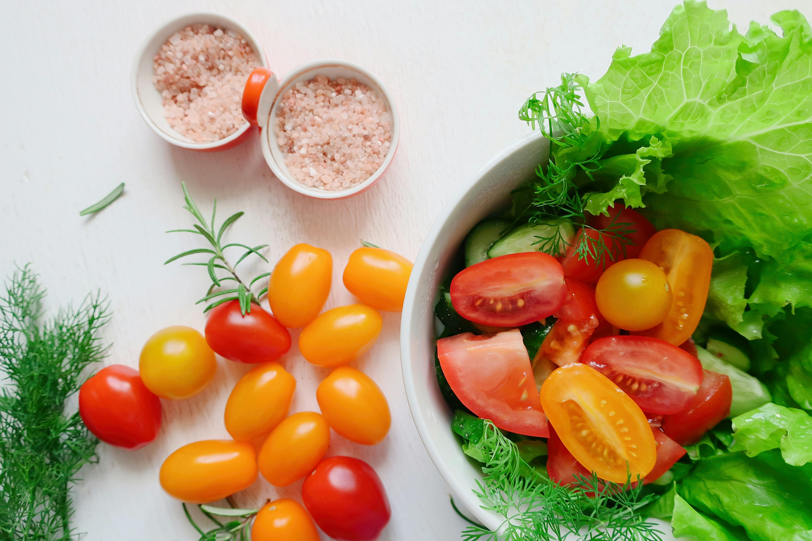

Omelete de queijo
Ingredientes:
- 02 ovos
- Sal e pimenta
- 01 colher de queijo ralado
Modo de preparo:
- Bata os ovos com sal e pimenta.
- Aqueça uma frigideira antiaderente e despeje os ovos batidos.
- Cozinhe em fogo médio até firmar. Adicione queijo por cima e dobre ao meio.
- Sirva quente.
Salada de tomate

Ingredientes:
- 01 tomate
- 01 pepino
- Azeite, sal e limão
Modo de preparo:
- Corte o tomate e o pepino em cubos.
- Misture em uma tigela e tempere com azeite, sal e limão.
- Sirva imediatamente ou leve à geladeira por alguns minutos.
Bolo de caneca

Ingredientes:
- 04 colheres de farinha
- 04 colheres de açúcar
- 01 ovo
- 03 colheres de azeite
- 01 colher de óleo
- 01 colher de chocolate em pó
Modo de preparo:
- Misture todos os ingredientes diretamente na caneca.
- Leve ao micro-ondas por 2 a 3 minutos (dependendo da potência).
- Espere esfriar um pouco e sirva.